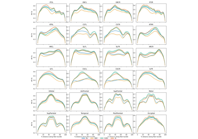
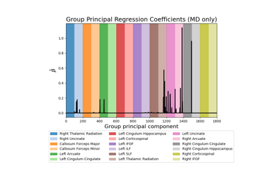
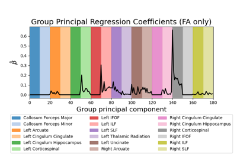

General examples
Introductory examples.


Harmonize HBN data using ComBat
Harmonize HBN data using ComBat

Predict age from white matter features
Predict age from white matter features

Classify ALS diagnosis from white matter features
Classify ALS diagnosis from white matter features